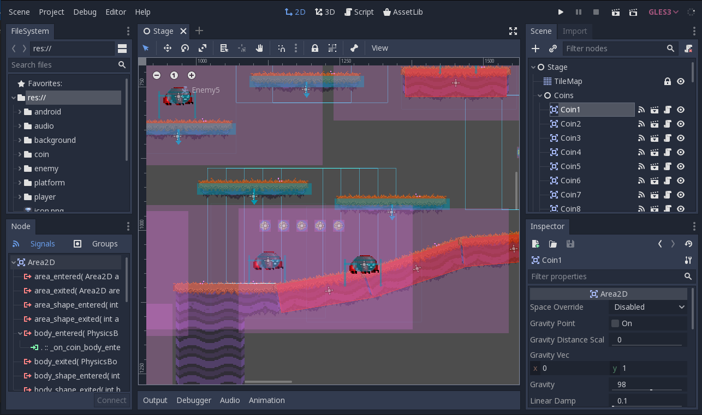

3.4.2 Implementacion del proyecto.
-


-
Existen directrices donde se describe cómo implementar procesos y herramientas en un proyecto
de desarrollo de software mediante la realización de las actividades descritas en la disciplina
de entorno. Asimismo, trata de la disciplina de gestión de proyectos, que aborda la planificación
del proyecto, la identificación de riesgos y la gestión, supervisión y evaluación del proyecto.
Es importante comprender que hay distintas formas de implementar procesos y herramientas, según
se describe en la sección que trata sobre los enfoques para la implementación de procesos y herramientas.
El enfoque que elija depende del estado actual del proyecto y de la empresa circundante, por ello, debe
realizar una valoración del proyecto y de la empresa circundante.
Directrices generales de planificación.
El enfoque que se elija para personalizar el proceso del proyecto, depende en gran medida de la
ceremonia del proceso de la empresa, así como de algunos otros factores. Por ejemplo:
• La madurez de los procesos de la empresa de desarrollo.
• El tamaño del proyecto en términos de tiempo de calendario y de número de recursos de desarrollo.
• La experiencia previa de los miembros del equipo en procesos similares.
• Los requisitos de formalidad del proyecto.
La implementación de un proyecto de aplicación multimedia involucra varias etapas, desde la
planificación inicial hasta la publicación y distribución del producto final. Es crucial definir
claramente los objetivos, el público objetivo y las características técnicas de la aplicación. Luego,
se procede al diseño de la interfaz, la selección de los elementos multimedia (texto, imágenes, audio,
video, animación) y la programación del software. Finalmente, se realizan pruebas, validaciones y ajustes
antes de la publicación y el lanzamiento.


Etapas clave en la implementación de un proyecto de aplicación multimedia:
1. Análisis y Planificación:
o Definir los objetivos del proyecto y el público objetivo.
o Determinar las características y funcionalidades de la aplicación.
o Realizar un análisis de las necesidades del usuario.
2. Diseño y Desarrollo:
o Diseñar la interfaz de usuario (UI) y la experiencia del usuario (UX).
o Seleccionar los elementos multimedia (texto, imágenes, audio, video, animación).
o Programar el software, integrando los elementos multimedia y las funcionalidades interactivas.
3. Pruebas y Validación:
o Realizar pruebas exhaustivas para identificar errores y mejorar la calidad de la aplicación.
o Obtener retroalimentación de los usuarios para validar la usabilidad y la efectividad de la aplicación.
4. Producción y Publicación:
o Preparar la aplicación para su publicación (formatos, empaquetado, etc.).
o Publicar la aplicación en las plataformas adecuadas (sitios web, tiendas de aplicaciones, etc.).
5. Difusión y Mantenimiento:
o Realizar campañas de marketing y promoción para dar a conocer la aplicación.
o Proporcionar soporte técnico y realizar actualizaciones periódicas para garantizar el buen funcionamiento de la aplicación.
-
Consideraciones importantes:
• Equipo interdisciplinario:
Es recomendable contar con un equipo de profesionales con diferentes perfiles (diseñadores, programadores,
expertos en contenido, etc.).
• Uso de herramientas adecuadas:
Utilizar software y herramientas de desarrollo multimedia para facilitar la creación y gestión del proyecto.
• Optimización para diferentes plataformas:
Adaptar la aplicación a los diferentes dispositivos y sistemas operativos en los que se utilizará.
• Consideración de la accesibilidad:
Diseñar la aplicación para que sea accesible a personas con discapacidad.
La implementación de un proyecto de aplicación multimedia requiere una planificación detallada,
un proceso de desarrollo riguroso y una evaluación continua para garantizar el éxito del proyecto.